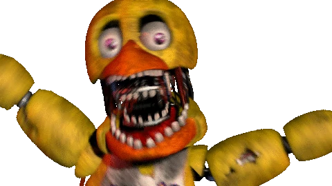
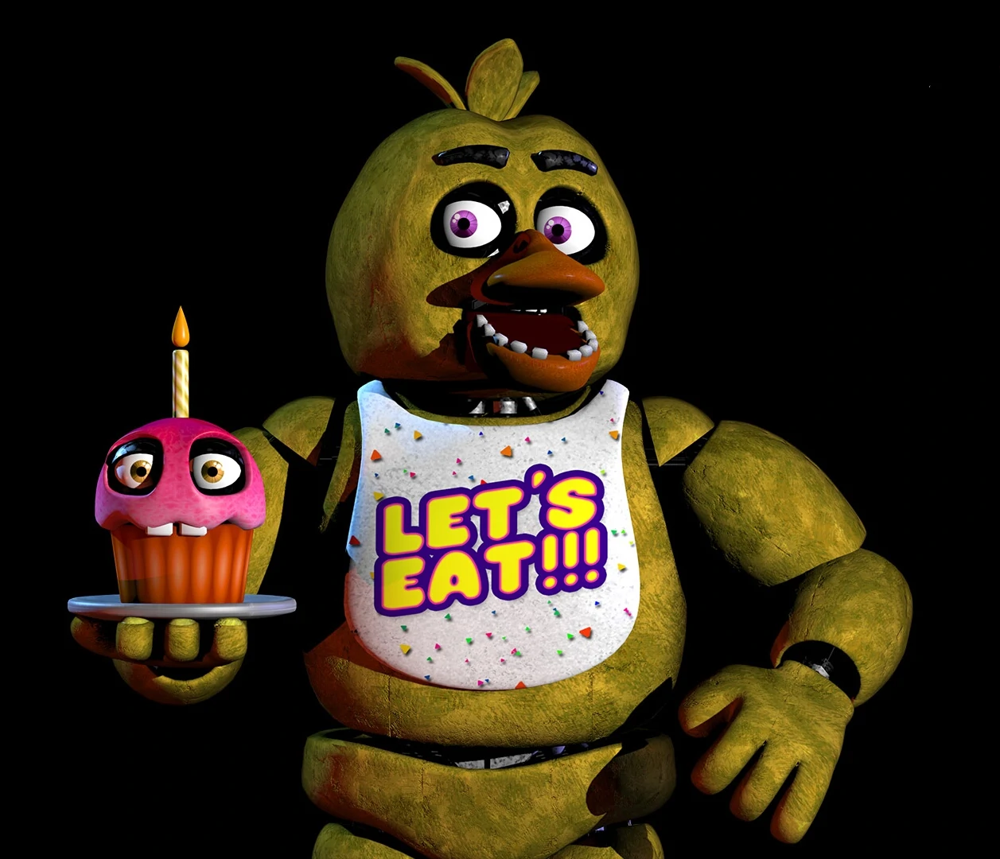

Chika is a yellow anthropomorphic animatronic chicken. The character's body consists of a matte
fabric skin covered with dark stained areas.
Chika has a rounded head shaped like an apple. On the top of her head is a bunch of three small
drop-shaped fragments, widened towards the top, imitating feathers.

On the face of the chicken there are two, far apart, round openings of the eye sockets, inside which are deeply set
round
eyes with a purple iris and three decorative white dots of light glare, framed by glossy black
metal eyelids. Above the eye sockets, the animatronic has flat, arched eyebrows that widen toward the center.
Below, in the middle of the antagonist's face, there is a bulky oval upper half of an orange beak
pyramidal in shape, with a rounded edge and two slits at the base.

Under the upper part of the beak is its trapezoidal lower half, rounded in shape. On the inner
edge of the lower fragment are ten smoothed white parallelepiped teeth with a large gap in the
in the middle.
Chika's head is connected to the torso by two metal bayonets of the endoskeleton neck with curved
metal cables and rods.
Chika is a restored analog of its Broken version, which was restored and put to use after
animators of the Toy Line were sent for disposal due to a malfunction. Chika is possessed by the spirit of a girl
named Susie,
whom William Afton, along with 3 other children, killed in the first Freddy Fusber's Pizza.
Chika has several variations that appear on the map depending on the player's level. Although
these versions are not
distinguishable in the pre-fight menu, they can be seen during gameplay:
12 level - a simple version begins to appear that
cannot
can crash or use interrupts.
15 level - a more complex version begins to appear,
which can crash and use interrupts, and static interference is reduced.
17 level - the simple version will no longer appear
on the
the map.
18 level - a regular version of Chiki begins to
appear,
which fully utilizes the mechanics of its CPU listed below, as well as the classic strength and
power of
Chica.
20 level - a more complex version stops appearing on
the
the map.
21 level - a crazy version begins to appear, which is
a
complicated version of the regular version, and uses mechanics written below the basic one.
23 level - the regular version stops appearing on the
the map.
26 level - the crazy version stops appearing on the
map, but a normal version with a lot of strength and power starts to appear, as well as a crazy
version with a lot of strength and power.